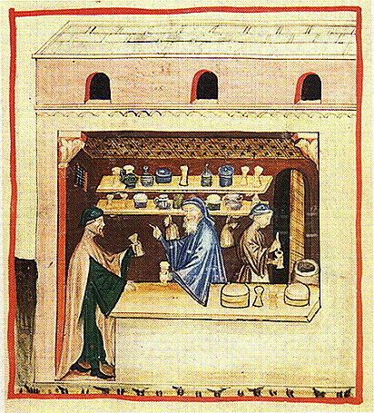
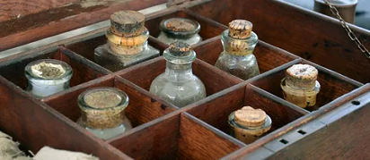

- Главная
- История
- Описание болезни
- Переносчики
- Целители
- защита
- Методы лечения
- Чумной форт
- Шарль де Лорм
- Врачи
- МЕНЮ
Методы лечения
В средневековье врачи не знали эффективных методов лечения чумы и использовали различные, часто бесполезные, способы: вырезали и прижигали чумные бубоны, применяли кровопускание и ставили пиявок или лягушек на опухоли. Также использовались странные средства, вроде прикладывания куриц к бубонам или притирания змеями, а также различные "универсальные" лекарства, такие как териак, содержащий опиум.

Методы лечения чумы в Средневековье
- Хирургические вмешательства: Вскрытие и дренирование чумных бубонов скальпелями. Прижигание бубонов для «выжигания» инфекции.
- Применение животных: Прикладывание к бубонам лягушек или куриц с целью «сбалансировать соки» или «вытянуть» болезнь. Притирание пораженных участков частями змеи, которую считали эквивалентом зла, которое должно было вытянуть болезнь.
- Кровопускание: Распространенная практика, направленная на «очищение» крови, но часто ослаблявшая пациента.
- Различные "лекарства": Териак: сложная смесь трав и других ингредиентов (иногда до 80), часто содержащая опиум.
- Компрессы и пластыри: например, из птичьих внутренностей.
- Использование "рога единорога": порошок из него смешивали с водой, веря, что он эффективно лечит множество болезней.
- Гигиенические и профилактические меры: Изоляция больных. Проветривание помещений и употребление свежего воздуха, что было одним из немногих действительно полезных советов.

/Oпиум/ - в традиционной медицине использовался как сильное болеутоляющее средство. Однако он быстро вызывал наркотическую зависимость и теперь применяется лишь как сырьё для получения медицинских препаратов (морфина, кодеина, папаверина и других), а также для синтеза наркотика героина.